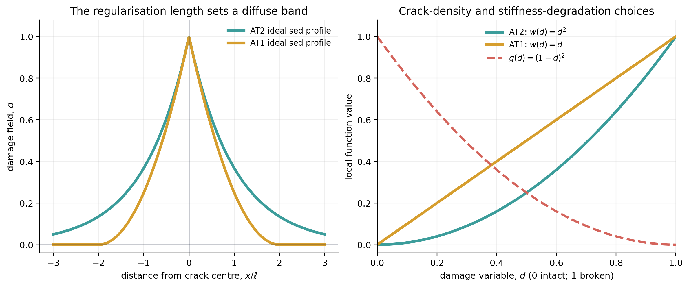

3. Fracture Energy: AT1, AT2, Degradation, and Bandwidth#
{kind=link}

Figure 3.1 The crack-density choice and the stiffness degradation law are independent mathematical functions. Together, they govern how damage nucleates, diffuses, and softens the solid.#
3.1. The Energy Balance: Why Do Materials Break?#
When an engineer pulls on a solid bar, work is done to stretch the atomic bonds. This energy is stored elastically inside the material. If a tiny defect or notch exists, stress concentrates intensely near the notch tip.
At some critical point, the solid faces a fundamental thermodynamic choice: Is it energetically cheaper to keep stretching the heavily strained atomic bonds, or to break them and create two free crack surfaces?
In 1921, A. A. Griffith discovered that a crack propagates whenever the rate of elastic strain energy released equals the energy required to create new fracture surface:
In phase-field fracture modeling, we approximate Griffith’s surface energy balance by introducing a continuous scalar damage field \(d(x) \in [0, 1]\) across the entire solid domain \(\Omega\):
\(d = 0\) (Intact Material): The material is completely undamaged, fully elastic, and bears its full load capacity.
\(d = 1\) (Fractured Material): The material is completely broken, its tensile stiffness has vanished, and crack surfaces are formed.
\(0 < d < 1\) (Diffuse Crack Band): A smooth transition zone of characteristic half-width governed by the regularisation length scale \(\ell\).
3.2. The Phase-Field Energy Functional#
For small-strain brittle fracture, the total potential energy of the coupled displacement-damage system is formulated as:
The ingredients have different jobs:
\(\psi^+\) is the part of elastic energy selected to drive fracture, often a tensile contribution;
\(\psi^-\) retains its full contribution in a tension–compression split;
\(g_\eta(d)\) reduces tensile stiffness as damage grows;
\(G_c\) sets the energy scale of fracture;
\(w(d)\) selects a crack-density family; and
\(\ell\) controls the regularised width of the damage band.
Spectral, volumetric–deviatoric, and other decompositions define \(\psi^+\) and \(\psi^-\) differently. State the split before interpreting compression, crack closure, or mixed-mode behaviour.
3.3. The damage convention and degradation derivative#
This book uses \(d=0\) for intact material and \(d=1\) for fully broken material. A standard residual-stiffness degradation law is
It satisfies \(g_\eta(0)=1\) and \(g_\eta(1)=\eta_{\mathrm{res}}\). The residual term helps prevent the elastic operator from becoming singular in a damaged zone. It should be reported because it affects the numerical problem and the post-peak response.
For a hand calculation or a tensor implementation, differentiate explicitly:
The negative first derivative is meaningful: increasing \(d\) lowers the degraded tensile energy. The resulting damage evolution also depends on fracture density, gradients, boundary data, and irreversibility through the total variation.
3.4. Hands-On Lab: Verifying the Degradation Derivative#
In the accompanying computational lesson, you will implement this quadratic degradation law in PyTorch and compute its derivative:
Analytically: Using explicit calculus, \(g'_\eta(d) = -2(1-\eta_{\mathrm{res}})(1-d)\).
Automatically: Using PyTorch’s automatic differentiation engine (
torch.autograd).Numerically: Using central finite differences with varying perturbation step sizes.
Hands-On Tutorial: Lab 02 (Autograd vs. Finite Differences for Degradation)
Ready to try this in practice?
Explore the interactive tutorial: Lab 02: Differentiating Degradation: Analytical, Autograd, & Finite Differences.
You can read through the worked derivatives and Taylor tests directly here in the book, or run it interactively in Google Colab with one click:
This exercise demonstrates the core mechanic of automatic differentiation: computing exact programmatic derivatives through the operations defined in your code.
3.5. AT2 and AT1 are normalised choices#
The crack-density contribution is often written
With this convention:
The labels AT1 and AT2 are widely used, but coefficients in papers can look different because authors absorb factors into \(G_c\), \(c_0\), or the gradient term. Compare the complete functionals and their normalisation.
3.5.1. Why the profiles look different#
At a fully developed straight crack in an idealised one-dimensional setting, the AT2 profile has exponential tails,
whereas the corresponding AT1 profile is compactly supported,
These ideal profiles explain the left panel of the preceding figure. Applications in finite domains require a mesh-convergence study with their boundary conditions and loading path.
In common one-dimensional analyses, AT1 exhibits a finite damage-initiation threshold, whereas AT2 can begin to reduce stiffness from the onset of tensile loading. That statement depends on the surrounding energy, loading, and history construction, which determine how the initiation thresholds compare.
3.6. Deriving the strong-form damage residual#
Hold \(u\) fixed momentarily and take a virtual change \(\delta d\). The damage-dependent part of the first variation is
Integrating the gradient term by parts gives, away from active constraints,
A natural boundary condition for an unconstrained boundary is \(\nabla d\cdot n=0\). The equation has three visible influences:
\(g_\eta'(d)\psi^+\) drives damage where the selected elastic energy is high;
\(w'(d)/\ell\) penalises local damage; and
\(-2\ell\Delta d\) penalises abrupt spatial variation.
The derivation identifies a diffusion-like gradient term coupled to the mechanical driving energy and a one-way damage history. These latter terms give the equation its fracture interpretation.
3.7. Enforcing irreversibility#
For brittle damage, a common admissible set at load step \(n\) is
The equation \(r_d=0\) applies away from active constraints. At an active lower bound, a multiplier balances the residual. Displaying the lower-bound constraint gives the local complementarity form
The upper bound introduces a second multiplier. Implementations may also use a history field, a constrained solver, or another equivalent strategy under stated assumptions. Verify irreversibility using the stored constraint or history data alongside the field plots.
3.8. Width, mesh, and what must be checked#
The parameter \(\ell\) is a modelling and numerical length. It spreads the regularised crack and therefore interacts with mesh spacing \(h\), geometry, and material calibration. A credible study reports \(\ell\), the mesh, and a convergence or sensitivity check appropriate to that combination.
Changing \(\ell\) can change:
the apparent width of the damaged band;
the peak load and softening response in a finite discretisation;
the required mesh density and nonlinear conditioning; and
the meaning of a comparison with an observed fracture process zone.
Interpreting the regularised width as a physical crack width requires calibration for the chosen material and model.
3.9. Exercise: one derivative and one scale argument#
Evaluate \(g_\eta(0)\), \(g_\eta(1)\), and \(g_\eta'(1)\) for the law above.
In the damage residual, which term becomes large when \(\ell\) is made small at fixed \(d\) and \(\nabla d\)?
Why is it incomplete to infer mesh independence from an unchanged full-domain average of \(d\)?
Solution
\(g_\eta(0)=1\), \(g_\eta(1)=\eta_{\mathrm{res}}\), and \(g_\eta'(1)=0\). The derivative vanishes at the fully degraded endpoint for this quadratic law.
The local crack-density contribution \(w'(d)/\ell\) scales inversely with \(\ell\). This scaling describes the local term at fixed fields; the full solution also depends on changes in the gradient and solution fields.
A spatial average can remain similar while the crack band moves, changes width, or is under-resolved. Compare fields, energies, and observables at stated refinements.
In the computational lesson, the first result compares the analytic, automatic-differentiation, and finite-difference derivatives of the selected degradation law at one stated damage value, with the remaining material inputs held fixed.
3.10. Sources for this chapter#
The Ambrosio–Tortorelli regularisation idea underlies the AT terminology. For phase-field fracture derivations and comparisons, see Miehe, Welschinger, and Hofacker (2010), Pham et al. (2011), and the review by Kristensen, Niordson, and Martínez-Pañeda (2021).